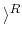

| GrayInc |
Gray Inc. produces its own particular kind of Gray code in
the following way (name Gn the produced n-Gray code,
n  1):
1):
The notation defining Gn should be understood as follows:
For instance,
| G2 | = | (0G1) (1G1R) |
| = | (00, 1) (10, 1) | |
| = | (00, 1) (11, 0) | |
| = | 00, 0111, 10 | |
| = | 00, 01, 11, 10 |
| G3 | = | (0G2) (1G2R) |
| = | (000, 01, 11, 10) (100, 01, 11, 10) | |
| = | (000, 01, 11, 10) (110, 11, 01, 00) | |
| = | 000, 001, 011, 010110, 111, 101, 100 | |
| = | 000, 001, 011, 010, 110, 111, 101, 100 |
Observe that not only Gn is an n-Gray code, but also a circular Gray code as the first word in the sequence may be regarded as the successor of the last one in the sequence.
Gray Inc. wants your help to solve the following problem: given a binary word w in Gn and a natural number m, they want to produce the binary word in the sequence Gn that is m words ahead w in the listing (of course, considering the circular ordering described above). Can you help them?
The problem input consists of several cases, each one defined
by a line with an integer m (
0 < m  1000), and a binary
n-word w (
1
1000), and a binary
n-word w (
1  n
n  100), separated by one blank.
100), separated by one blank.
The end of the input is given by a line with m = 0 and w = 0.
For each input case, your solution should output the n-binary word that is m words ahead of w in the listing of Gn.
1 0 3 0 1 1 1 11 6 011 123 010101010 0 0
1 1 0 10 000 111100100